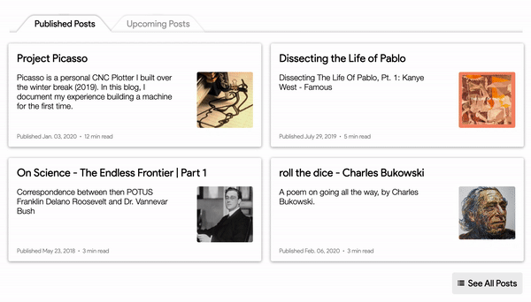
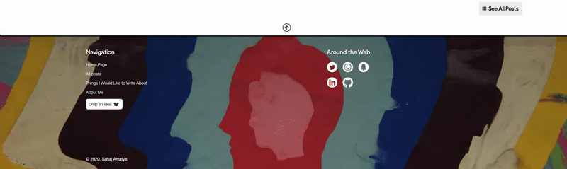

|
Last updated: March 25, 2020, v1
The most fundamental principle of design I laid down for my website was to have every element sustain a quality of being intangible unless explicitly required. I wanted to introduce elements that were the direct product of what may be achieved through imagination, with only little inspiration from real world objects. From the moment the user arrives to the landing page, they are greeted with particles floating across the screen randomly, some interlinked with others. This is not a sight one would be able to catch with real world objects, especially considering how these particles are interactive.
The User Interface
As the user scrolls down, they are met with an interface displaying my posts:
You may notice that the tabs on the top try to mimic tabs from an address book. Although the design might seem simple at first, it took me about 7-8 hrs to give life to this design since such shapes are not standard with CSS. The fact that I am a CSS novice did not help either. The approach I chose at the end was to surround the text within those tabs with skewed rectangles to create the illusion of a sloped line.
The contents of this container try to mimic the form of cards on a surface with each card representing a path to the blog post it is referring to. They create the illusion of achieving a slight elevation when the cursor is hovered over them.
Staying True to the Design Principle
A design choice I had to debate over was what image I would be adding as the background to my footer.
My first choice was to add a textured leather background where the text could be embossed on. However, I chose to stick to the fundamental principle of design for this project and went with something more abstract, something that could only be created through human thought or emotion. The background image you see now is a screen grab from the music video for Feels Like We Only Go Backwards by Tame Impala (Lonerism, 2012). At this point in the development of the website, the only colors I had displayed were black and white with an aim to maintain simplicity. However, the addition of such vivid colors was refreshing, and it opened the door to allow other colors to be included as well, which fact I capitalized on when deciding to add thumbnails for my posts.
Also, the reason this background image for the footer is static is because I wanted the user to experience scrolling through this website as if they were sliding a piece of paper up or down, thus allowing me to stay true to the principle of material design. I must note that this feature only works on non-mobile devices as mobile devices are incapable of running the JavaScript for this.
Half way through development, I was unsure if I should remodel this website with Neumorphism instead of Material Design. I ended scraping this idea as I faced difficulties in making image elements adapt to this design pallete. Here are some iterations of my design through the neumorphic approach:
Building a Mechanism for Dark Mode
Adding the dark mode feature to this website was both the most challenging and the most exciting part of development for me. All resources online for implementing dark mode, although helpful, worked only for the single webpage the code was written for. This would reset the view mode after every other webpage the user would visit on my website. I wanted my dark mode to be consistent along all webpages so that the user did not have to keep toggling the view mode back to their desired option after every other webpage.
I achieved this by learning to create and manipulate HTTP cookies. Once I had the mechanism for dark mode built, I had to study the shades of black to come up with a color scheme that had the best aesthetic. I couldn't make the background completely black as it would render the shadow effect ineffective. I realized that the closer an element was to the user, i.e., the higher an element was elevated from the base, the lighter it would appear. Also, as obvious as it may be, I learned a key difference between giving a black element an opacity of 0.5 versus the color of grey. In contrast to a white background, both elements would appear to be grey, but when put in contrast to a darker background, the element with an altered opacity tends to become invisible.
Purpose
I created this website for a variety of reasons. First of all I should mention that I originally hosted my blogs on WordPress under the domain sahajamatya.wordpress.com. I called my blog "My Meditations", being inspired by the works of Marcus Aurelius. I did not like the fact that WordPress put their ads on my website and I had to pay them to have them removed. Plus, there was very limited creative control over how I wanted my content to be displayed. So I decided to launch my own website.
Now I can display exactly what I want, how I want without ads ruining the experience. I can even organize my posts exactly how I want to, arranging them according to categories. This website is now a place for me to organize my thoughts and invest my creative outflow.
Another reason for me to start this development was to learn to build specific tools. These include building sorting algorithms, content management systems, search algorithms, and a whole lot more. If you are a user of Reddit, you are likely aware of how the upvote system works there: you upvote posts/comments you like and they are arranged in order of the most upvotes. This is something I would like to implement on the Upcoming Posts section on my main page which would allow me to decide what topic I should focus on more, not that I expect a big enough viewership, but this is how one learns.
Further Developments
I will be rebuilding this website in the summer of 2020 with React JS coupled with either NodeJS or PHP as my backend. I would like to implement a clap feature similar to that which Medium uses for their blogs. I will also be working on the functionality to add comments soon. No credential management will be required as I do not anticipate a large enough readership that may warrant such a need.